Ce module contient plusieurs test permettant d'assurer le bon fonctionnement des modules CSR, LU, CONJUGATE_GRADIENT et SOLVER. Plus de détails...
Fonctions/Subroutines | |
| subroutine | test () |
| Cette subroutine appelle l'ensemble des tests implémentés et affiche chaqu'un des résultats. Plus de détails... | |
| logical function | test_set_1 () |
| logical function | test_lu_1 () |
| logical function | test_lu_2 () |
| logical function | test_solver_forward_1 () |
| logical function | test_solver_backward_1 () |
| logical function | test_solver_lu_1 () |
| logical function | test_solver_lu_2 () |
| logical function | test_transpose_1 () |
| logical function | test_transpose_2 () |
| logical function | test_inner_product_1 () |
| logical function | test_recopy () |
Description détaillée
Ce module contient plusieurs test permettant d'assurer le bon fonctionnement des modules CSR, LU, CONJUGATE_GRADIENT et SOLVER.
Documentation de la fonction/subroutine
◆ test()
| subroutine unit_test::test | ( | ) |
Cette subroutine appelle l'ensemble des tests implémentés et affiche chaqu'un des résultats.
Voici le graphe d'appel pour cette fonction :
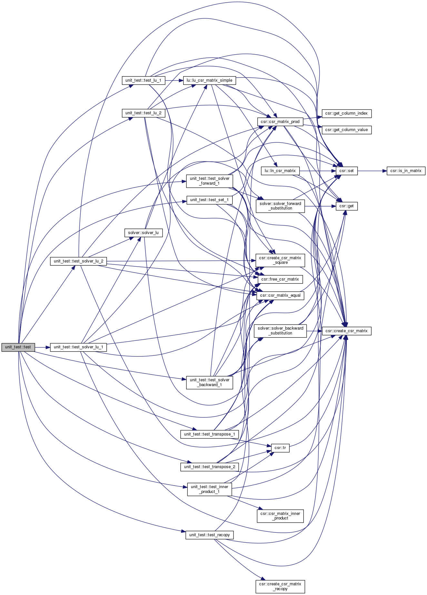
Voici le graphe des appelants de cette fonction :
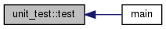
◆ test_inner_product_1()
| logical function unit_test::test_inner_product_1 | ( | ) |
Voici le graphe d'appel pour cette fonction :
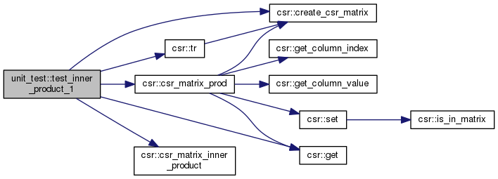
Voici le graphe des appelants de cette fonction :
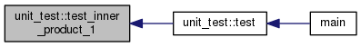
◆ test_lu_1()
| logical function unit_test::test_lu_1 | ( | ) |
Voici le graphe d'appel pour cette fonction :
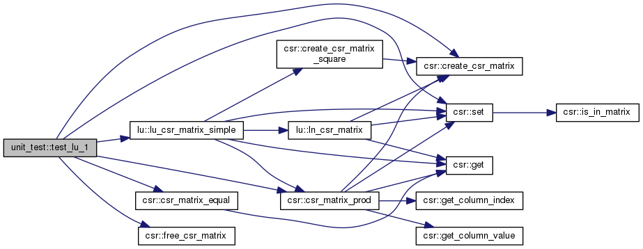
Voici le graphe des appelants de cette fonction :
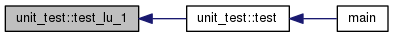
◆ test_lu_2()
| logical function unit_test::test_lu_2 | ( | ) |
Voici le graphe d'appel pour cette fonction :
Voici le graphe des appelants de cette fonction :
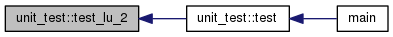
◆ test_recopy()
| logical function unit_test::test_recopy | ( | ) |
Voici le graphe d'appel pour cette fonction :
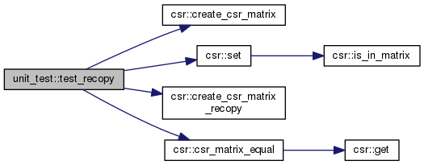
Voici le graphe des appelants de cette fonction :
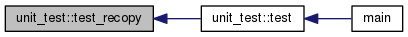
◆ test_set_1()
| logical function unit_test::test_set_1 | ( | ) |
Voici le graphe d'appel pour cette fonction :
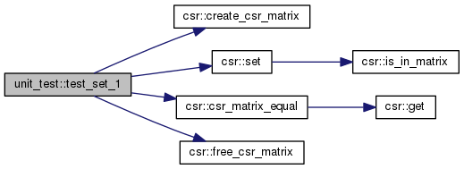
Voici le graphe des appelants de cette fonction :
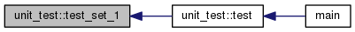
◆ test_solver_backward_1()
| logical function unit_test::test_solver_backward_1 | ( | ) |
Voici le graphe d'appel pour cette fonction :

Voici le graphe des appelants de cette fonction :
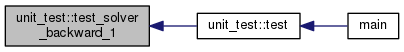
◆ test_solver_forward_1()
| logical function unit_test::test_solver_forward_1 | ( | ) |
Voici le graphe d'appel pour cette fonction :
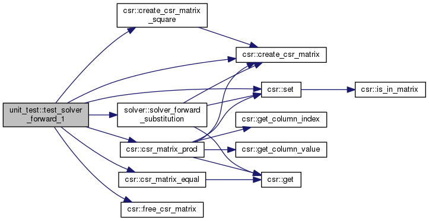
Voici le graphe des appelants de cette fonction :
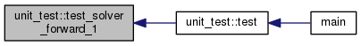
◆ test_solver_lu_1()
| logical function unit_test::test_solver_lu_1 | ( | ) |
Voici le graphe d'appel pour cette fonction :
Voici le graphe des appelants de cette fonction :
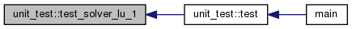
◆ test_solver_lu_2()
| logical function unit_test::test_solver_lu_2 | ( | ) |
Voici le graphe d'appel pour cette fonction :
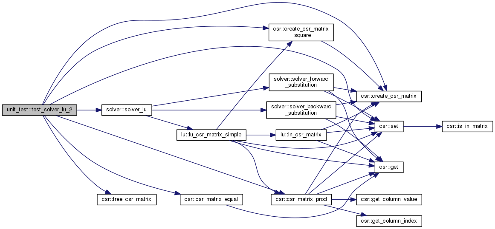
Voici le graphe des appelants de cette fonction :
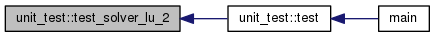
◆ test_transpose_1()
| logical function unit_test::test_transpose_1 | ( | ) |
Voici le graphe d'appel pour cette fonction :
Voici le graphe des appelants de cette fonction :
◆ test_transpose_2()
| logical function unit_test::test_transpose_2 | ( | ) |
Voici le graphe d'appel pour cette fonction :
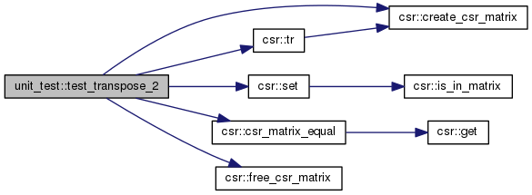
Voici le graphe des appelants de cette fonction :
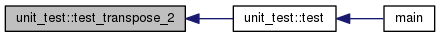